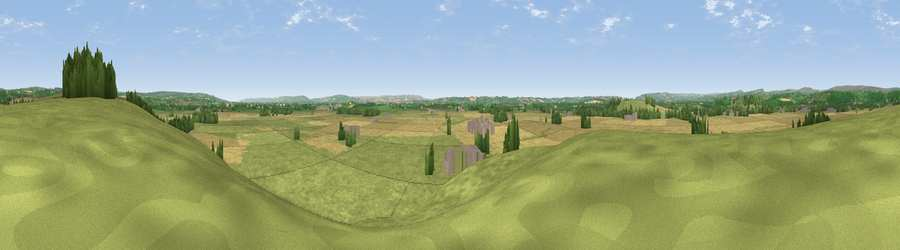

Viewpoint near Marton
#18127 in England · top 38% of its area beats it · near MartonThe view, rendered

A 360° render of this exact spot computed from the terrain model, tree cover and land cover — summer colours, afternoon light, calibrated against photographs of famous viewpoints. Real trees, hedges and buildings will differ in detail.
The panorama
Grey silhouette: terrain skyline in each direction (720 bearings, Earth curvature and refraction included). Dashed green: skyline with trees (+15 m) and buildings (+8 m) as obstacles. Blue strip: how far the ground is visible on each bearing.
Where the view opens
Wedge length = distance to the farthest visible ground on that bearing (vegetation-aware). Rings at 10, 25 and 50 km.
What fills the view
58% grassland · 35% cropland · 6% woodland · 2% built-up
Angular shares of the visible panorama (visual magnitude), not map area. Landscape diversity 0.40 (0–1 Shannon).
Key numbers
More beautiful places nearby
The staircase of upgrades: each row has a higher view potential than everything closer. Driving times are estimates from straight-line distance, calibrated against real road routing — check an actual route before setting out.
| Place | Direction | Drive | Score |
|---|---|---|---|
| Viewpoint near Marton | NE · 1 km | ~2 min | 58.3 |
| Viewpoint near Cropton | N · 7 km | ~15 min | 61.5 |
| Viewpoint near Coneysthorpe | SSW · 10 km | ~20 min | 65.8 |
| Viewpoint near Gillamoor | NW · 12 km | ~22 min | 67.2 |
| Viewpoint near Gillamoor | NW · 12 km | ~22 min | 72.8 |
| Viewpoint near Ampleforth | WSW · 15 km | ~27 min | 76.6 |
| Viewpoint near Kilburn | W · 24 km | ~39 min | 79.3 |
| Viewpoint near Thirlby | W · 24 km | ~39 min | 81.5 |
54.23386, -0.85203 · source: screening · position refined by local search. Computed location — check access rights before visiting.